Getting Started
To install the Supershop theme you must have a working Prestashop already installed. To set-up Prestashop you can consult them directly by going to www.prestashop.com/en/getting-started
Installation
1. Automatic Installation (Recommended)
Step 1: Navigate to Preferences > Themes
Click on "Add new theme" button (on the top-right of header's toolbar)
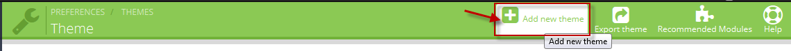
Step 2: Go to the "Import from your computer" section, then Click on the input[1] button or the Add file[2] button. Find the location of the zipped file in the "Supershop Theme" folder ("Supershop Theme/SupershopTheme-vx.x.x.zip"). Finally, you click on the Save[3] button to finish this step.
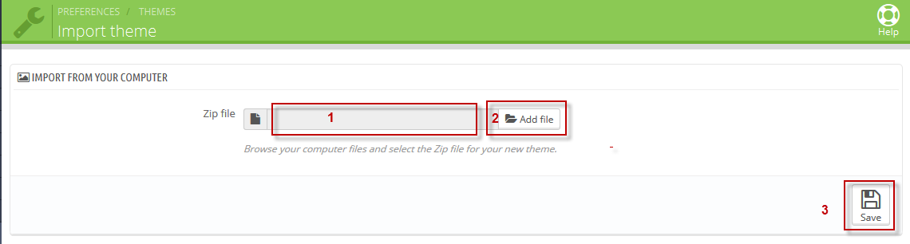
Step 3:
The result is displayed as the following image:
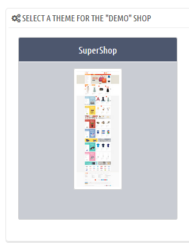
Hover on the image and then click on the “Use this theme” as displaying in screenshot below:
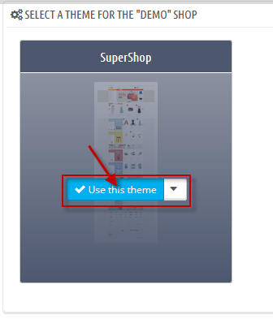
Step 4: This is the result after doing Step 3. Click on the "Save" button to finish Step 4 and wait a while then go to next step.

Step 5:

In this step, you can click on the "Go to the thumbnails regeneration page" [Note] button or Finish[2] button to finish installation.
[Note] : Regenerate Images
If you do not want to use the default size of thumbnails of Prestashop, you can re-generate all of these thumbnails. Of course, you also can re-generate only some sizes/dimentions of these thumbnails.

- Change the image size settings in the table at the top of the "Images" preference page.
- Select which content's images should be regenerated.
- Indicate whether the previous thumbnails should be kept or not.
- Click "Regenerate thumbnails".
* Notice that: Manually-uploaded thumbnails will be erased and replaced by automatically-generated thumbnails.
Important configuration:
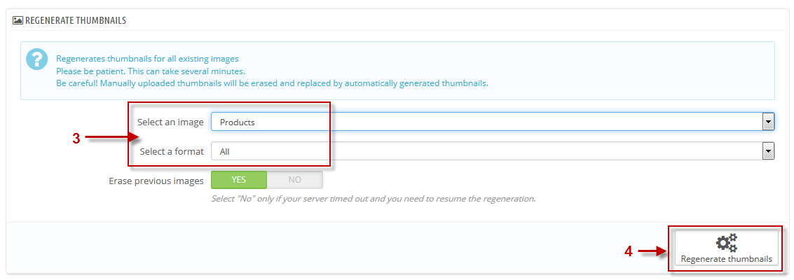
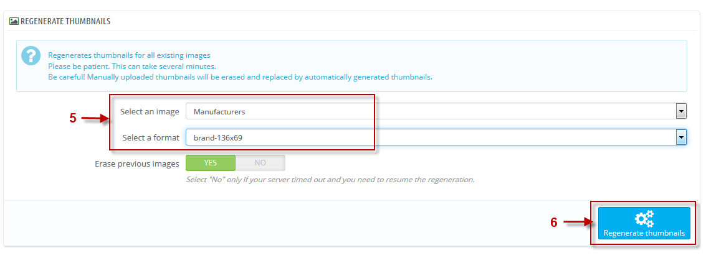
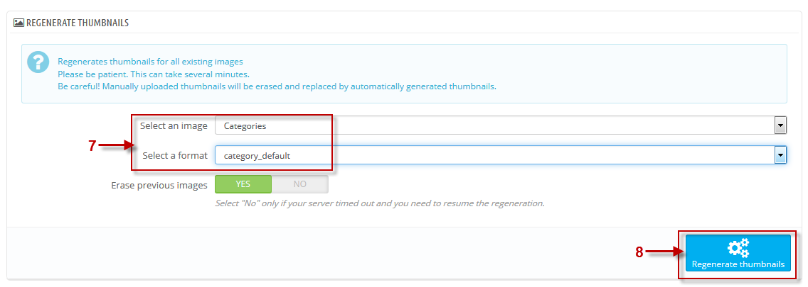
After Installation
1. Image Setting
Go to Preferences > Images
In the "IMAGES" section, go to "Image quality" . You need to choose "Use PNG only if the base image is in PNG format" and then click on the "Save" button.
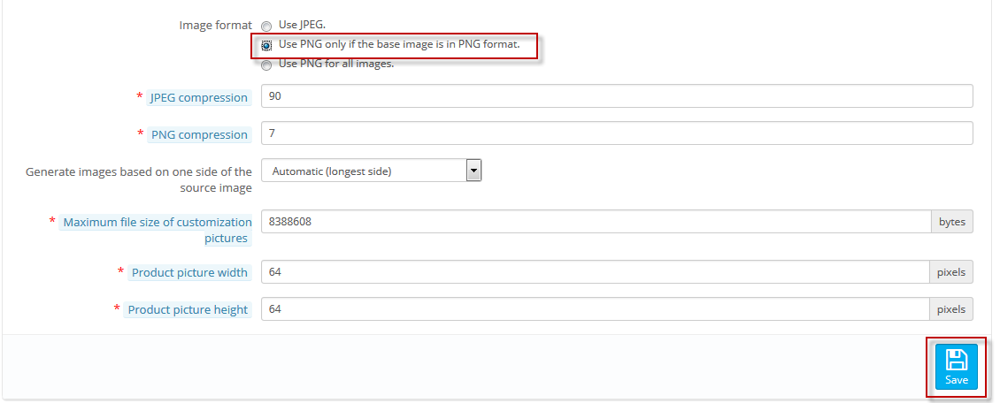
2. Adding Logo and Icon
Go to Preferences > Themes
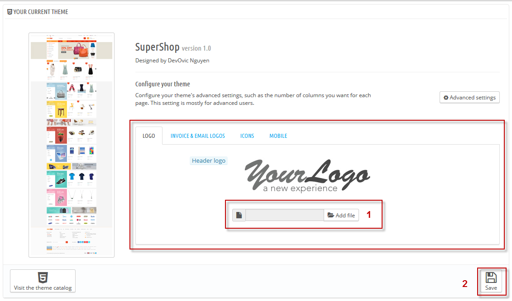
You can upload your logo.jpg [1] and icon.ico ( You also can find the demo logo and favicon in the folder /Documentation/logo and then upload them). After that, click on the "Save" [2] button to save above setting information.
- In INVOICE & EMAIL LOGOS tab, you can upload your logo.jpg and icon.ico into the fields: Mail logo[3] and Invoice logo[4], click on "Save"[5] button to save the setting.
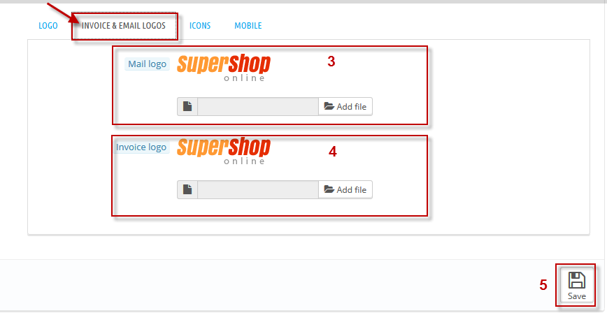
- In MOBILE tab, choose "I'd like to disable it" [6] to enable responsive-layout on smartphones and tablets as below screenshot. Then click on the "Save" button [7].
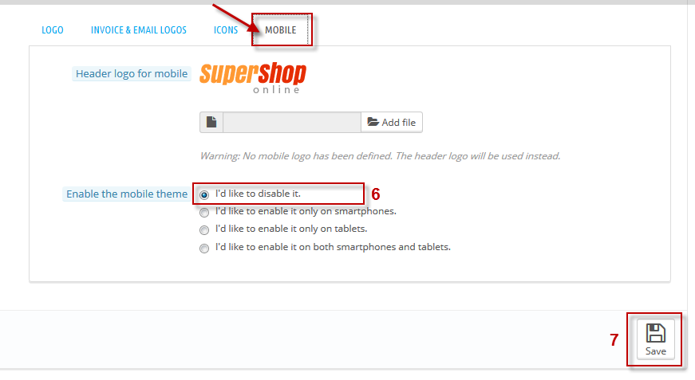
- Logo on your site before uploading:
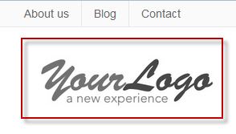
- Logo on your site after uploading:
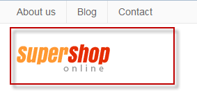
- After completing all the above steps. Our site displays as the following image.
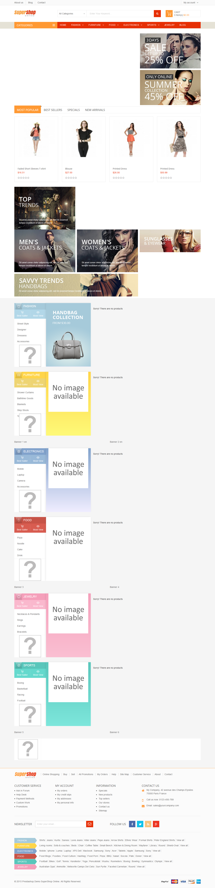
We continually need to reset and install some modules, so your site can be displayed as the screenshot below:
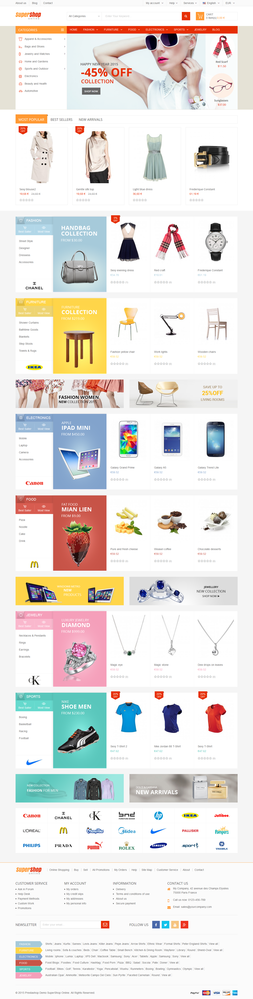
- You need to configure something to enable the Vertical mega menu. Please do following screenshots:


- You need to choose the position: "displayVerticalMenu" [3], so this module can show in the home page:

Custom Modules
The purpose of this section: We help you to create a demo site like above screenshot
All of the attachement/customized modules in our theme have the prefix “Supershop”
Navigate to the "Module" and search with the keyword "Supershop" to see the molules list.
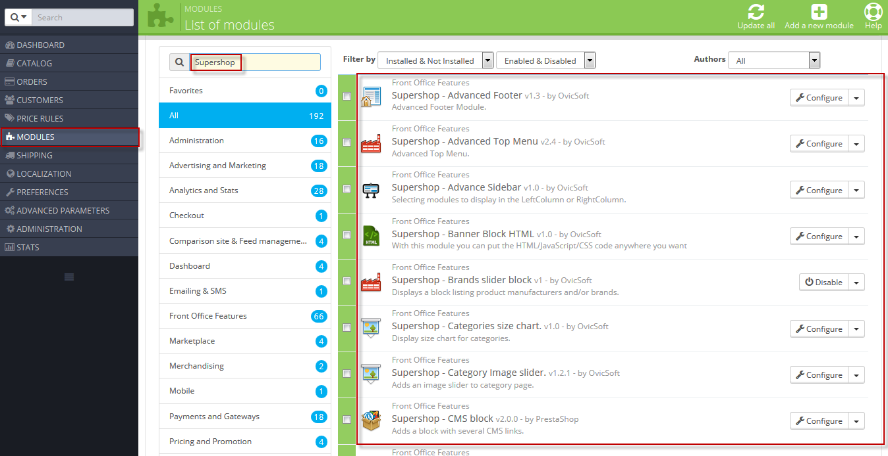
These are some modules are displayed on homepage :

- [1]: Supershop - Banner Block HTML
- [2][16]: Supershop - CMS Block
- [3]: Supershop - Quick search with category
- [4]: Supershop - Advance top menu
- [5]: Supershop - Vertical Mega Menu
- [6]: Revolution Sliders
- [7]: The default module of Prestashop
- [8][10][12]: Supershop - Group Category Module
- [9][11][13]: Supershop - Custom Banner Module
- [14]: Supershop - Brands slider block
- [15]: Supershop - Advanced Footer
- [17]: Supershop - Custom Tags Module
1. Theme Configurator
The first module which needs to be configured, is "Theme configurator". This module is used to set the position/hook of banners on homepage(in the content column, left column or right column,...).
Navigate to Modules >Theme configurator then click on the "Configure" button
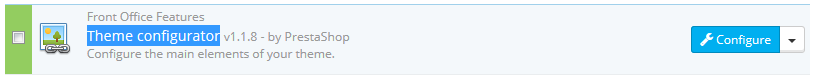
You need to set the same information as folowing below screenshot[1].
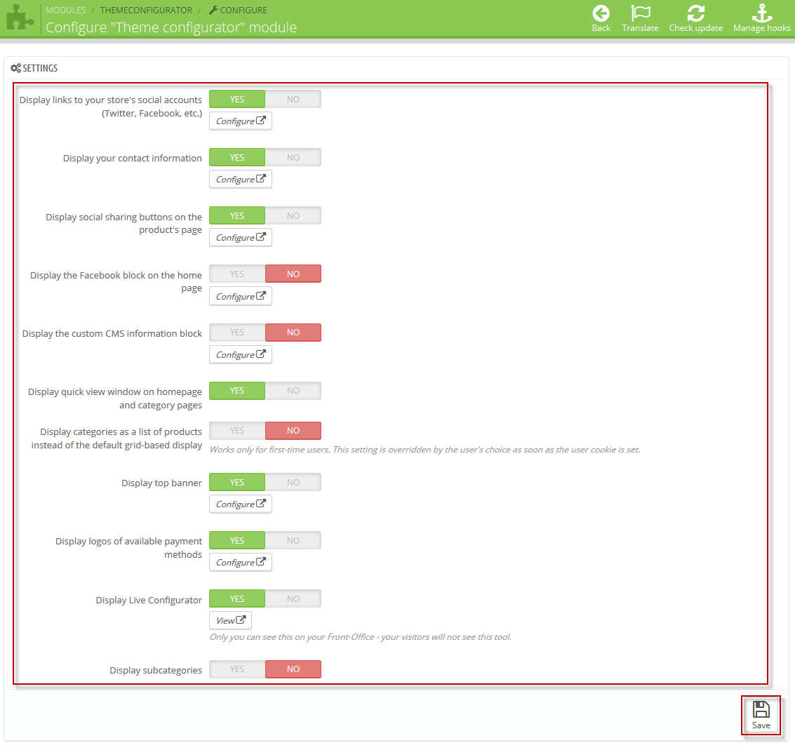
Then click "Save" [2] to save these setting information.
How to setup banners like the demo site?
Under the “THEME CONFIGURATOR” tab
- Step 1: You need to delete the default/existed banners of Prestashop. These banners are put into the HOOKs in the "THEME CONFIGURATOR" tab.
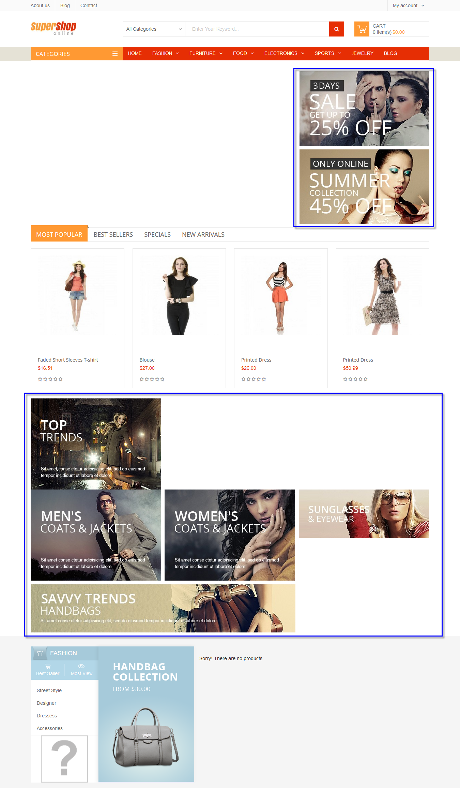
How to delete these banners. See the screenshot below:
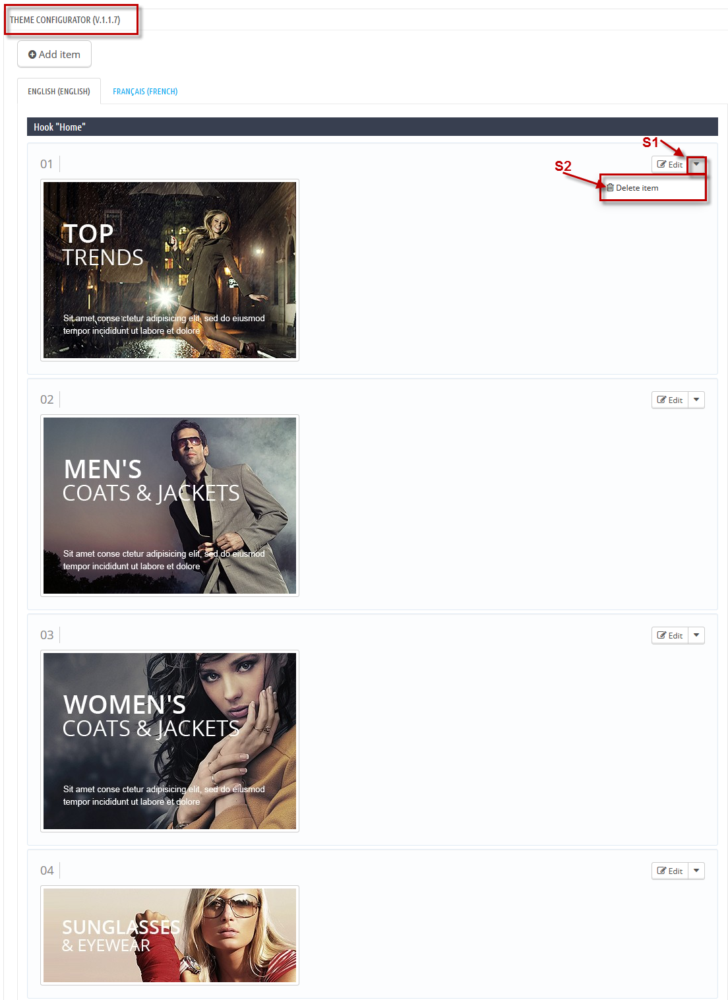
- [S1] Click on the narrow which is nex to the "Edit" button to show the dropdown.
- [S2] After that click on "Delete item" to delete this banner.
- Step 2 : Upload your banners.
We need to upload 1 banner for Hook “Left”. You can upload your images or using our demo images (in the folder /Documentation/img-demo).
To upload a banner, click on the "Add item" button:
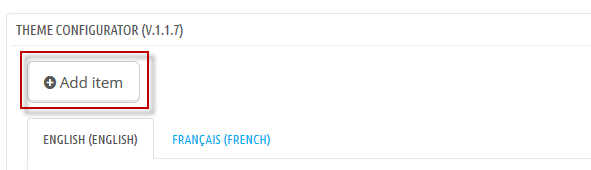
You need to input the necessary information in the below form:
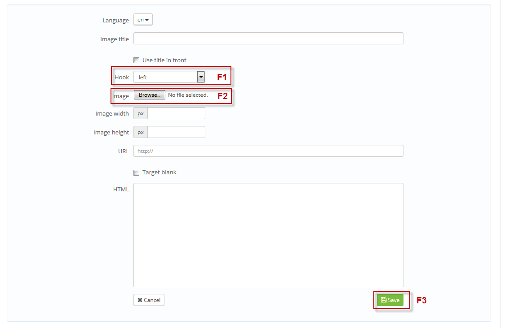
- [f1] Choose the Hook position that you want to upload the banner. You must upload 1 banner for "Hook : left"
- [f2] Upload your banners or you can upload our demo banner and find them in the folder: "/Documentation/img-demo".
- [f3] Click on the "Save" to upload the banner and save the information.
- You can see the demo banners that we uploaded for hooks in the screenshot below:
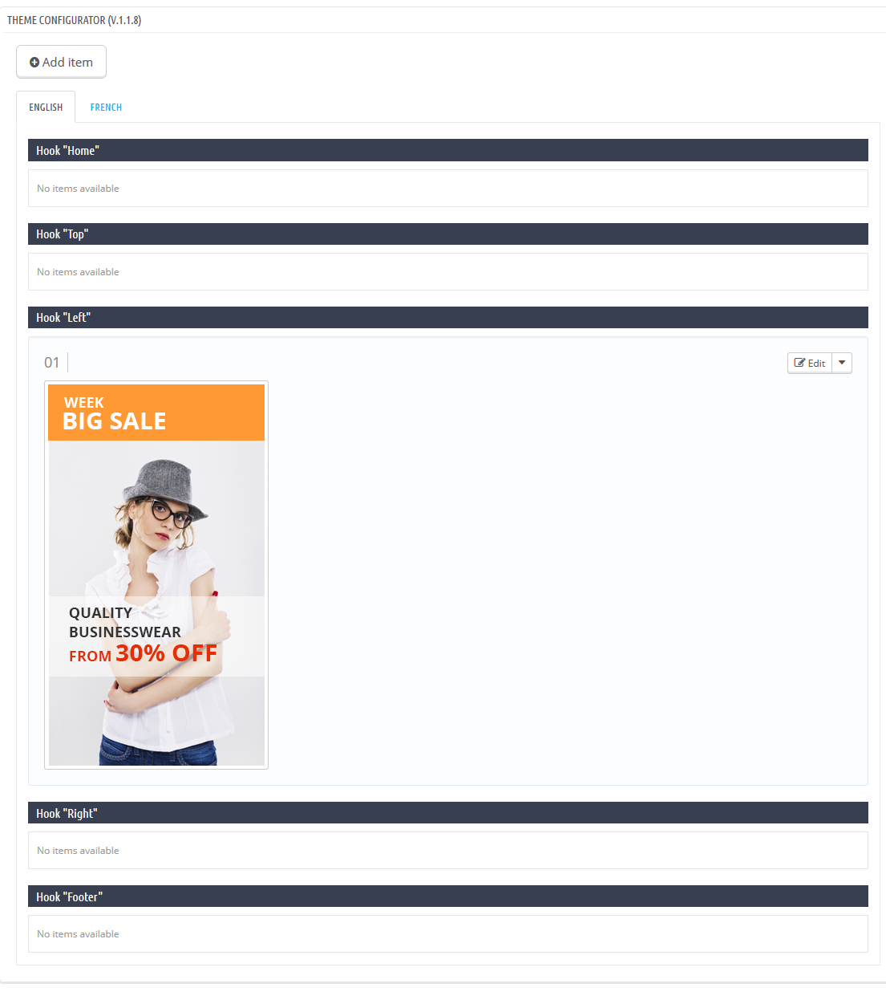
- The Banners that are hook-ed into the left column of the site.
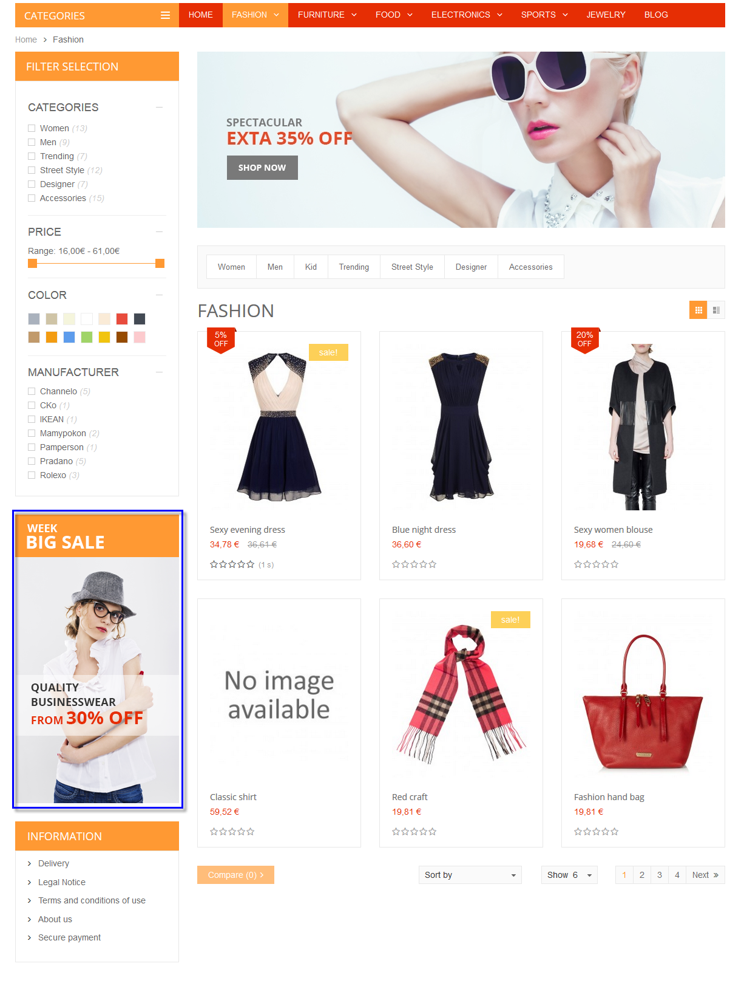
2. Supershop - Advanced Top Menu
This module allows to create menu in mega menu format. Mega menu supports for creating two main components are the main menu[1] and the sub menu[2]. After installing our Theme, the demo data for menus will be automatically installed. You can see the style of the top menu in the front-end demo. But you need to change the image's url and the links to suite your site (Default setting for these links, is #).
Following images are the detailed instructions for using this module:
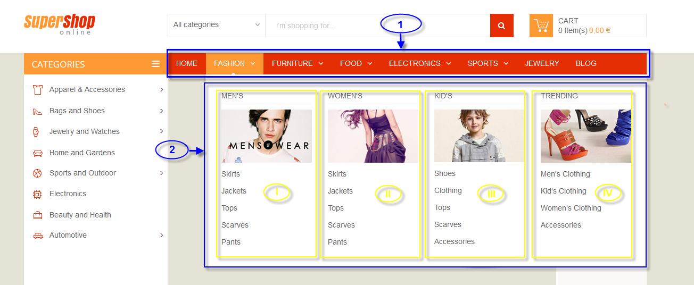
Main menu[1] consists of multi-items, each item has or hasn't a sub menu[2]. In the Installed demo menu, there are 8 items in main menu: Home, Fashion, Furniture, Food, Electronics, Sports, Jewelry, Blog. As the above screenshot, sub menu of item Fashion is shown.
If you would like to manage the menu. You can do following these steps:
- Navigate to Modules > Advanced Top Menu
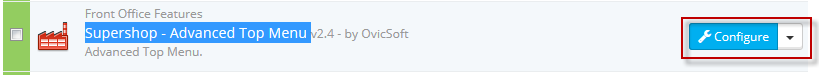
- Click on the Configure button
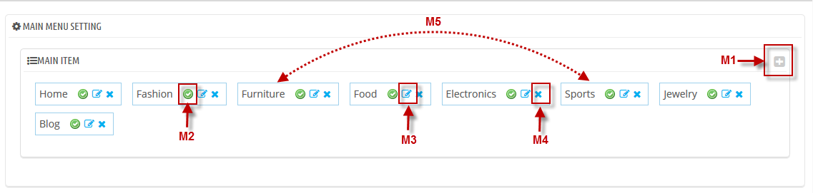
- For the main menu and items in main menu, we can manipulate one of the following actions:
- [M1] : Add a new item for the main menu.
- [M2] : Active or de-active an item of the main menu.
- [M3] : Edit an item of the main menu.
- [M4] : Delete an item of the main menu.
- [M5] : Drag and drop to change the position of items.
2.1 How to add a new item for the main menu:
Step 1: In the "Main menu setting" section, click on the plus "+" icon to add a new item for main menu:
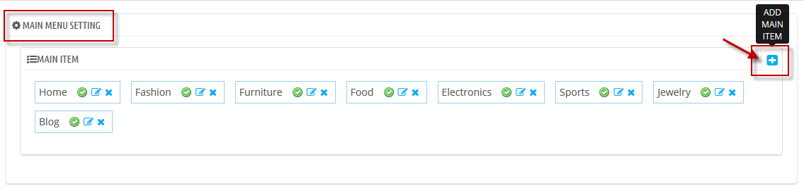
Step 2: You need to input the necessary information into this following form.
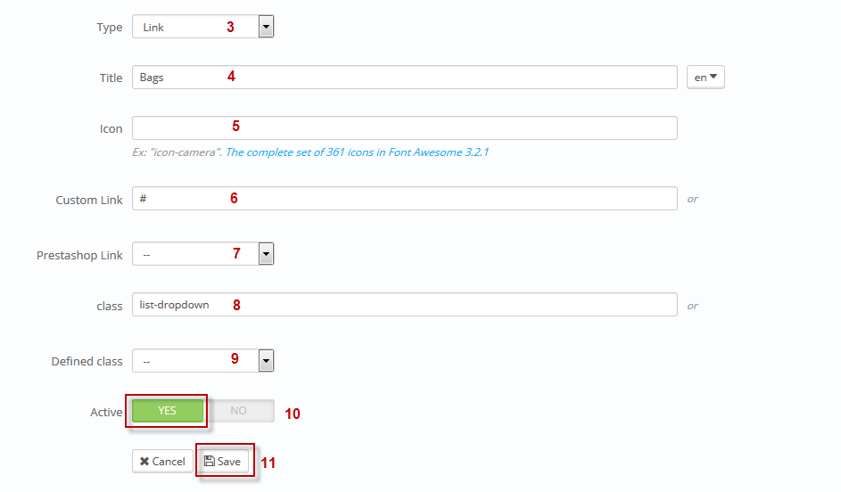
In this form:
- Type [3]: Types of main menu's item( it can be one of these types: link, image, custom HTML).
- Title [4]: Title of the main menu's item (Supports multi-languages).
- Icon [5]: You can add awesome font icons in the front of items of menu.
- Custome Link [6]: you can put a custom link for this item.
- Prestashop Link [7]: or you can select a existed link which is available in the Prestashop system.
- Class [8]: you can add your own class into this textbox.
- Defined class [9]: or select a existed class in this box.
- Active[10]: Select "Yes" to active this item.
After inputting the neccessary informations, click on the "Save" button [11] to save the information.
Notice you created an item successfully[12]. New item is displayed in the backend[13]
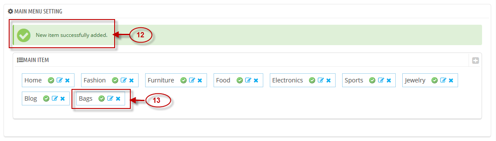
See the result in frontend[14]
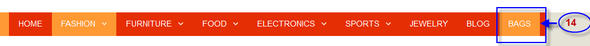
2.2 How to edit an item of the main menu:
Step 1: In the "Main menu setting" section, click on the "pecil"[15] icon of any items that you want to edit.
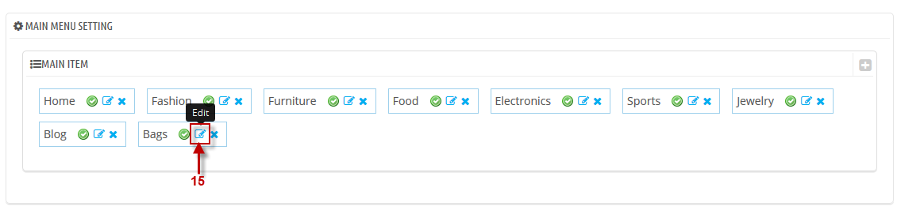
Step2: In this form, you need to edit the necessary information [16], similarly when you create an item of the main menu (like above...)

After that click on the "Save" button[17] to save the information
Step 3: See the result in the backend [18] and in the frontend [19]
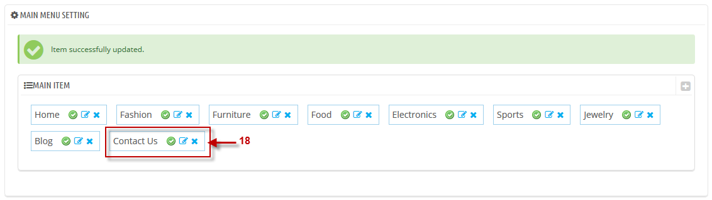
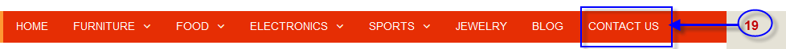
2.3 Delete an item of the main menu:
- To delete an item of the main menu, click on the "delete" icon [20]:
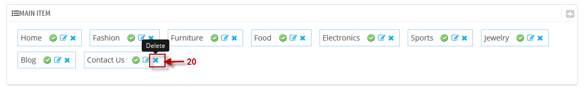
- Confirm to delete:
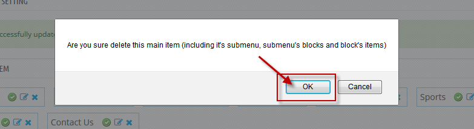
- See the result in the backend
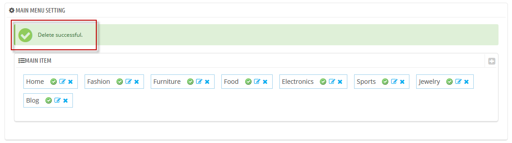
- See the result in the frontend
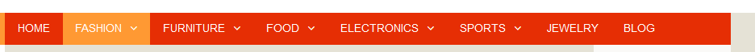
2.4 In the Advance top-menu module, How I can active/de-active the items of main menu?
- To de-activate an item of the main menu, click on the "active" icon [21]. Also to activate an item of the main menu, click on the "de-active" icon[22]. See the result in the backend.
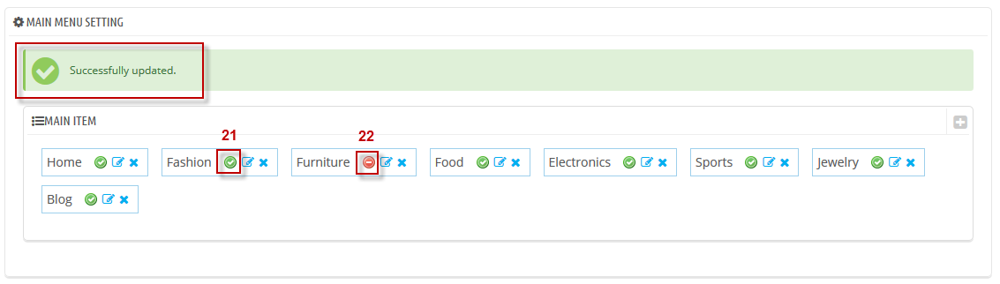
- See the result in the frontend.
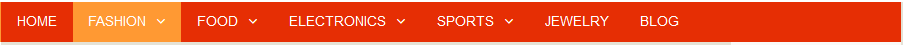
2.5 How to change the position of items in the main menu?
To change the position of items in the main menu:
- In the backend, you just need to drag and drop items[23]:
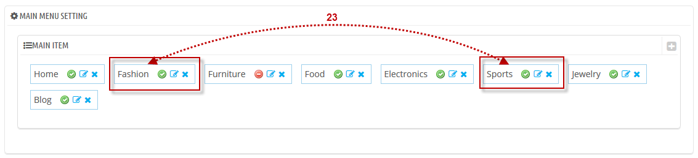
- See the result in the backend.
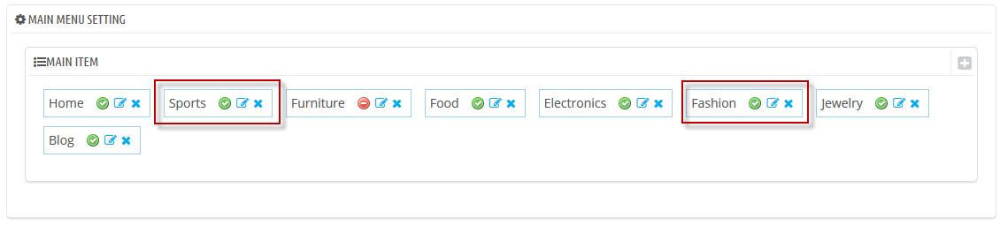
- You also can check in the frontend too:
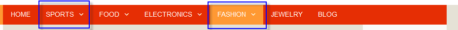
2.6 How can I create my own sub-menu for item in the main menu?
Example: Create a sub-menu for the item: "Fashion" in the main-menu such as the screenshot bellow:
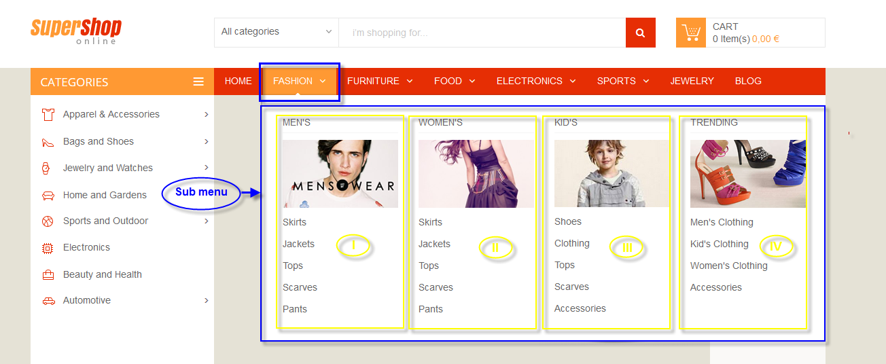
Step1: Go to the "Sub Menu Setting" section, click on the plus "+" icon on the top -right corner [24] to add submenu.

Step 2: In the "Sub Menu Setting" form, input the needed information:
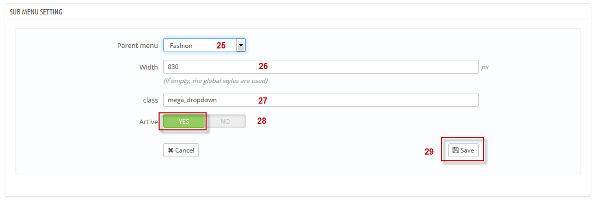
In this form:
- Parent menu [25]: Select a main menu's item that you want to create a sub-menu for it.
- Width [26]: input a numberic value for the width of this sub-menu (If you leave it blank, the default width's value is 995px)
- Class [27]: you can add a custom class for this sub-menu. We have created some classes that you can use (mega_dropdown men; mega_dropdown; mega_dropdown gift;...), so in the "class" textbox[27] you can type : "mega_dropdown"
- After you add the necessary information, click on the "Save" button [29] to save the setting. See the result in the screenshot below:
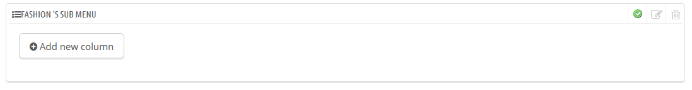
Step 3: Create columns for this sub-menu as well as items for each column. Click on the "Add new column" button [30] on the above screenshot to create the first column:
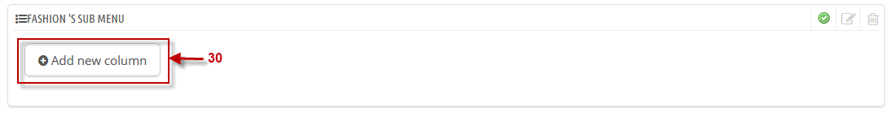
- In the "Block Setting" form, you can select a value in the "Block width" dropdown list [31], and add a custom class [32] for this column:
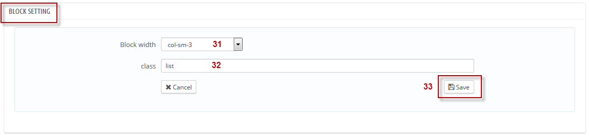
- Block width[31]: the length of column with the Bootstrap's standand. If your sub-menu have one column only and you want to setup a full length for this column, you need to selectcol-sm-12 ; If there are two columns need to select col-sm-6; three columns need to select col-sm-4, …
- Class[32]: a custom class for column. If you want to create the list of items having style such as column [I], [II], [III], [IV] in Fashion's sub menu, adding class "list" when you create a column:
- Then click on the "Save" button [33] to save the setting. See the result [34] for the first column of Fashion's sub menu.
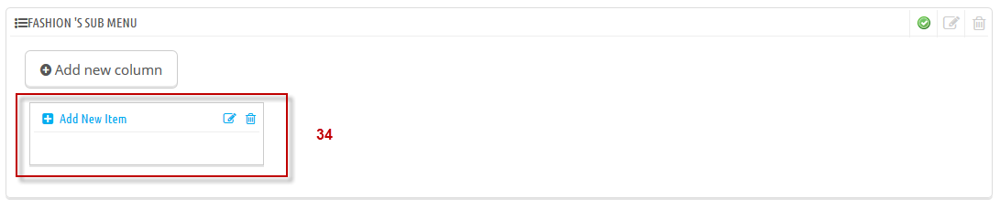
- Step by step, you need to create three remaining columns for this Fashion submenu:
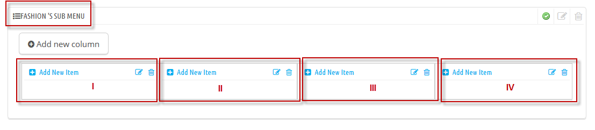
Step 4: We continuously go next step to add items for these columns.
In the backend, click on the "Add New Item"[35] on the top of column [I] to add the first items for this column. You also need to add the necessary information
The folowing image will appears:
You need to add the necessary information:
- Type [36]: Types of main menu's item( it can be one of these types: link, image, custom HTML).
- Title [37]: Title of the main menu's item (Supports multi-languages).
- Icon [38]: You can add Awesome font icons in the front of items of menu.
- Custome Link [39]: you can put a custom link for this item.
- Prestashop Link [40]: or you can select a existed link which is available in the Prestashop system.
- Class [41]: you can add your own class into this textbox.
- Defined class [42]: or select a existed class in this box.
- Active[43]: Select "Yes" to active this item.
- Then click on the "Save"[44] button to save these information:
* Note: You can create heading text for columns. Doing the same way like you create an item for the column but in the " Defined class" dropdown box you need to choose the value: "Group header":
- And see the result in the backend [45]
- You continuously click on "Add New Item" icon to add the second item for this column.
You also need to add the necessary information for above form[46]:
- Type: Types of main menu's item( it can be one of these types: link, image, custom HTML).
- Alt Text: Input alt text(Supports multi-languages).
- Icon [38]: You can add Awesome font icons in the front of items of menu.
- Custome Link: you can put a custom link for this item.
- Prestashop Link: or you can select a existed link which is available in the Prestashop system.
- Image : Uploading image by clicking on Browser button.
- Class: you can add your own class into this textbox.
- Defined class: or select a existed class in this box.
- Active[47]: Select "Yes" to active this item.
- Then click on the "Save"[48] button to save these information:
- And see the result in the backend for the second item of this first column [49]
- Do the same way to add the remaining items as our demo for all columns. And see the result in the backend [50] & the frontend [51] below:
2.7 How to work with submenu?
For this above form, we can manupulate one of these actions:
- [52] : Add a sub-menu for item in the main menu.
- [53] : Active or de-active sub-menu of item in the main menu.
- [54] : Edit a sub-menu of item in the main menu.
- [55] : Delete sub-menu of item in the main menu.
2.7.1 Add a sub-menu for item in the main menu.
Refer to section 2.6 (step1 and step 2)
2.7.2. Active or de-active a sub-menu of item in the main menu, click on the "de-active" icon [56]. See the screenshot below:
- To de-activate a sub-menu of the main menu, click on the "active" icon [57]:
Of course, depending on : you activate or de-activate a sub-menu then it will be showed or hidden (when hover on the main item) in the frontend. Submenu of Fashion item has been hidden.
2.7.3 Edit a sub-menu of item in the main menu, click on the "Edit" icon [58] on the top-right corner of the sub-menu's box:
In the "Sub menu setting" form, you can change the values for "Parent menu", "Width", "Class", "Active or Deactive" [59] then click on the Save button [60] to save the new setting for this sub-menu:
2.7.4 Delete sub-menu of item in the main menu, click on the "Delete" icon on the top-right corner of the sub-menu's section [61] and then the sub-menu will be removed from the system in both of the backend & frontend:
2.8 How to work with column?
- [62]: Add new column for sub-menu.
- [63]: Edit a column of sub-menu.
- [64]: Delete a column from sub-menu.
- [65]: Drag and drop to change the position of columns.
2.8.1 Add new column for sub-menu
Refer to section 2.6 (step 3)
2.8.2 Edit the setting of one column of sub-menu, click on the "Edit" icon in the top right corner of column [63]:
In the "Block Setting" form, you can change the value for "Block width" as well as the class's name. Then click on the Save button to save the new setting [67]:
2.8.3 Drag and drop to change the position between columns.
- The result in the backend, you also can check in the frontend too:
2.8.4 Delete one column of the sub-menu, click on the "Delete" icon on the top-right of that column [68] then click on the OK button [69] to confirm:
And see the result below [70] & [71]:
2.9 How to work with items in columns:
Each column we can manipulate one of the following actions:
- [72] : Add a new item into column.
- [73] : Active or de-active an item of a column.
- [74] : Edit an item in a column.
- [75] : Delete an item in a column.
- [76]: Drag and drop to change the position of item in a column.
or display as these images below:
To display the module like these images above, following these steps:
Step 1: Navigate to Modules > Vertical Mega Menu
Step 2: Config the module by clicking Configure button.
The module will be displayed like image below:
This module allows to create a vertical mega menu with 4 levels that is illustrated as the image below:

- [Level 1]: Category
- [Level 2]: LIST MENU in the category
- [Level3]: LIST GROUP IN MENU
- [Level 4]: MENU ITEM in a group
3.1 Category setting
This section allows to create a group of categories, in this demo we create only one category.
To create a new category, navigate to Module list and click ADD NEW button as the image below:
Fill all the information in the popup form as the image below:
- [c1]Name: Name of category
- [c2]Language: The language which the category will be displayed. Remember to translate name of category into another language.
- [c3]Position: Choose the position which the category will be hooked into
- [c4]Layout: Choose Layout [default]
- [c5]Show item: Number of sub categories(LEVEL 2) in the category
- [c6]Display: Click YES to visible the category, click NO to invisible the category
- [c7]Ordering: The order of category
- Click SAVE button to insert new category into database. The result is displayed as the image below:
To edit the parameter in any category, click to the icon  in the same line with the category that you want to edit as the image below:
in the same line with the category that you want to edit as the image below:
The design will be displayed as the image below:
After editting all the parameters, click to Save button.
To delete any category in the group, navigate to Module list, click to the icon  in the same line with the category that you want to delete as image below:
in the same line with the category that you want to delete as image below:
3.2 Configuration LIST MENU in the category
This section allows to create new, edit or delete list of menu in the category.
Navigate to the category's name below the Module list as the image below:
To create a new sub category, click ADD NEW button as the image below:
Fill all the information in the popup form as the image below:
- [s1]Title: Name of menu in the category
- [s2]Language: Language which the menu will be displayed
- [s3]Icon: Choose the menu's icon by clicking on the icon
 to navigate to image's folder.
to navigate to image's folder. - [s4]Width: Width of the menu in the category(the maximum width of a menu is 12 columns)
- [s5]Display: Click YES to visible the menu, click NO to invisible the menu
- [s6]Ordering: The order of the menu will be displayed
- [s7]Select link: There are 2 type of links. If we choose Custom Link then we must fill a link into [s8]Url, otherwise we can choose any link in the Category Link in the drop down box then the [s8]Url will be filled automatically as the image below:
- [s8]Url: Type a link into if the [s7]Select link is Custom Link
- [s9]Type: Type of menu in the category. There are 3 types of sub category, they are Link, Image and Custom HTML which is displayed as the image below:

If the type of menu is Image, the design will be displayed as the image below:
+ To insert an image by clicking the icon , browse to the image folder and choose the image that we want to insert.
+ Fill the image's description in to Image Alt.
+ Choose other language and insert image and image information again.
If the type of menu is Custom HTML, the design will be displayed as the image below:
+ Fill the content into Custom HTML textbox
+ Choose other language and insert the translated content
Click SAVE button to insert a new menu (menu in LEVEL 2), here is an example:
To edit the parameter in any menu in the category, click to the icon  in the same line with the menu that you want to edit as the image below:
in the same line with the menu that you want to edit as the image below:
The design will be displayed as the image below:
After editting all the parameters, click to Save button.
To delete any menu in the category, navigate to [category's name], click to the icon in the same line with the menu that you want to delete as image below:
3.3 Configuration LIST GROUP IN MENU
To configure list of group in a menu (LEVEL 3), navigate to Module list, click on [category's name], click on the menu that we want to configure as the image below:
To create new group in menu by clicking on ADD NEW button as the image below:
Fill all the information in the popup form as the image below:
- [g1]Title: Title of group
- [g2]Language: The language which the group will be displayed
- [g3]Display title: Choose YES to visible the title of group [g1]Title, choose No to invisible
- [g4]Group width: Width of group
- [g5]Type: Type of group. There are 3 types of group, they are: Link, Product, and Custom
If the type of group is Product then the design will be displayed as the image below:
- [g6]Category:The category which the product belongs to
- [g7]Options: Type of product will be displayed, these 4 types are: Best saller, Specials, New Arrivals and Manual (manual has another design)
- [g8]Count Item: Number of product item will be displayed in the group
- [g9]Item width: Width of each item
If the [g7]options is Manual, the design will be displayed as the image below:
If the [g7]options is Manual, the product displays in the group will not depend on [g6]Category. More than one product can be displayed.
- [g10]Product Ids: List of product's id, each product id separates by a comma (,)
- [g11]Item width: The width of item in the group
If the type of group is Custom then the design will be displayed as the image below:
- [g12]Item width: This is the width of each item in the custom group.
Click SAVE button to insert a new group (LEVEL 3), here is an example:
or:
To edit the parameter in any group in menu (LEVEL 3), for example: If we want to edit group Women's in the Categoriesas > Apparel & Accessories click to the icon in the same line with the group that you want to edit as the image below:
The design will be displayed as the image below:
After editting all the parameters, click to Save button.
To delete any group in menu (LEVEL 3), navigate to the group, click to the icon  in the same line with the group that you want to delete as image below:
in the same line with the group that you want to delete as image below:
3.4 Configuration MENU ITEM in a group
To configure menu items in a group, navigate to [category's name] (LEVEL 1), click on the menu in the LIST MENU[category's name] (LEVEL 2), click on the group in LIST GROUP IN MENU[menu's name] as the image below:
To create a new menu item in a group, click on ADD NEW button as the image below:
The design will be displayed as the image below:
- [i1]Title: Title or name of menu item
- [i2]Language: The language which the menu item will be displayed
- [i3]Select link: If the [i3]Select link is Custom Link then we need to fill the [i4]Url by a link, else we can choose a link in the Category Link as the image below:
- [i4]Url: If the [i3]Select Link is Custom Link then a link must be filled here, else if the [i3]Select link is a link in the Category Link as the image above then the [i4]Url will be filled automatically.
- [i5]Type: Type of menu item. There are 3 values of menu item, they are: Link, Image, Custom HTML.
If the [i5]Type is Image then the design will be displayed as image below:
- [i6]Image: Insert an image by clicking on the icon
 to navigate to image's folder then choose the image
to navigate to image's folder then choose the image - [i7]Image Alt: Image's description
- [i8]Language: The language which the Image and Image Alt will be displayed
If the [i5]Type is Custom HTML then the design will be displayed as image below:
- [i9] Custom HTML: The custom content of menu item
- [i10]Language: The language which the Custom HTML will be displayed
- Click SAVE button to insert a new menu item.
Here is our example:
To edit the parameter in any menu item, click to the icon in the same line with the menu item that you want to edit as image below:
The design will be displayed as the image below:
After editting all the parameters, click to Save button.
To delete any menu item, click to the icon  in the same line with the menu item that you want to delete as image below:
in the same line with the menu item that you want to delete as image below:
The output demo was illustrated as these images above.
4. Install Revolution Slider
This section we will guide you how to install Revolution Slider.
Go to Modules > Modules, Click on the icon "+" Add a new modules, see screenshot below.
It will takes to the page ADD A NEW MODULE, click on Choose a file[1] button at the Module file field. Find the location of the zipped file "revsliderprestashop-supershop.zip" in the "Supershop Theme" folder ("Supershop Theme/revsliderprestashop-supershop.zip"). Finally, you click on the Upload this molule [2] button.
After uploading this module, It will appears in molules list, you continuously click on Install[3] to install this module.
A popup "This molule is untrusted" appears, click on Proceed with the installation[4] button.
It will takes you to the page of Revolution Sliders, at this form you can import our default slider. Click on Import Slider[5]
The pop up Import Slider will appears, to upload our default slider by cliking on Browser[7]. Find the location of the zipped file "supershop1.zip" in the "Supershop Theme" folder ("Supershop Theme/supershop1.zip"). Finally, you click on the Import Slider button[8] to finish this step.
The default slider named "supershop1 "has been imported into your store, click on Setting [9] to change some settings.
It takes you to the page "Edit Slider ", At the field "Display Hook"[10] of Main Slider Setting section, choosing displayHome ( Homepage content). Finally click on "Save Settings" button[11], see the following image.
- You continuously click on "Manager Hooks" button at the top right corner of this form.
Croll down to the displayHome then clicking on "Unhook" this section.
After installing Revolution Slider and importing our demo sliders, the result is displayed on homepage like following image.
5. Popular Block
- This block allows to display the popular products on homepage (See the POPULAR tab).
If you want to see more products in this block, you can click on the "Next" button [1] or "Back" button [2], other Popular products will be loaded.
- You can choose the number of popular products displaying on homepage by the way:
Navigate to Modules >Featured products on the homepage
Click on "Configure" button, it will takes you to the SETTINGS page.
For above form:
- [3] Number of products to be display on the Popular tab on homepage.
- [4] Category from which to pick products to be displayed. Choose the category ID of the products that you would like to display on homepage (default: 2 for "Home").
- [5] Randomly display featured products. Enable if you wish the products to be displayed randomly (default: no).
- Click on "Save"[6] button to save the setting.
6. Best Seller block
- This block allows to display the best-selling products on homepage (See the Best Sellers tab).
If you want to see more products in this block, you can click on the "Next" button [1] or "Back" button [2], other best-selling products will be loaded.
- You can choose the number of the best-selling products displaying on homepage by the way:
Navigate to Modules >Top-sellers block
Click on "Configure" button, it will takes you to the SETTINGS page.
- [3] Products to display: Determine the number of product to display in this block
- [4] Always display this block: Show the block even if no best sellers are available.
- Click on "Save"[5] button to save the setting.
7. New Arrivals block
- This block allows to display the new arrival products on homepage (See the New Arrivals tab).
If you want to see more products in this block, you can click on the "Next" button [1] or "Back" button [2], Other new arrival products will be loaded.
- You can choose the number of the new arrival products displaying on homepage by the way:
Navigate to Modules >New products block
Click on "Configure" button, it will takes you to the SETTINGS page.
- [3]
- [4] Number of days for which the product is considered 'new'
- [5] Always display this block. Show the block even if no new products are available
8. SuperShop - Group Category
If you setup the version 2.7, you can check the updated guide for module here: http://kutethemes.com/help/group-category-module/
This module allows to display a list of category blocks. Each category block is displayed as the image ebelow:
To display the module like the image above, following these steps:
Step 1: Navigate to Modules > Group Category Module
Step 2: Config the module by clicking Configure button. The module will be displayed as the image below:
- [1]: To establish style for Category module. How many category blocks are displayed, it will need equivalent number of block styles in List style
- [2]: To create and setup params for category blocks. Each category block will be displayed in a Hook position.
8.1 List style settings
The purpose of this setting is to establish color styles for category module that is displayed in front-end as the image below:
To establish the style following these steps:
Step1: Navigate to Group Category module > click on List style > click on Add new button as the image below:
Step2: setup all parameters in the popup as the image below:
- [h1]Background Color: Background color for Category name (is marked h1 in front-end design above)
- [h2]Background Type: Background color for Specials, New Arrivals, Best Seller or Most View (is marked h2 in front-end design above)
- [h3]Color List Active: Background color of sub category items when mouse hovers (is marked h3 in front-end design above)
- [h4]Banner Gradient: Background color on top for banner gradient (is marked h4 in front-end design above)
- [h5]Banner Gradient: Background color on bottom for banner gradient (is marked h5 in front-end design above)
- [h6]: Category name which is displayed in category block
After setup all parameters, click Save button. This is a design after adding new style:
To edit the style by clicking to the icon  , the design will be displayed as the image below:
, the design will be displayed as the image below:
After changing all parameters in the popup form, click Save button to update the style.
To delete the style click to the icon
8.2 List group settings
To create all parameters in a new Category block by clicking on Add new button in List group as the image below:
- [m1] Group name: Type name of Category block
- [m2] Language: Choose the language that category block is displayed. This language is used by the website in front-end
- [m3] Icon: Choose the icon for the category block by clicking the icon
- [m4] Banner: Choose the banner for the category block by clicking the icon
- [m5] Link banner: link banner
- [m6] Position: Hook position which the category block is displayed
- [m7] Category: Choose the category displays product items
- [m8] Style: Choose the style for the category block
- [m9] Type default: Choose the default type to display list of products for the first time loading module
- [m10] Show types: Choose types of product displaying on category block (Best saller, Most view, Specials, New Arrivals)
- [m11] Manufacturer: Choose one or more than one manufacturer in the list
- [m12] Image width: Width of manufacturer's logo
- [m13] image height: Height of manufacturer's logo
- [m14] Width: Product's width displays in module
- [m15] Height: Product's height displays in module
- [m16] Min width: Minimum of product's width
- [m17]: number of products displays in module
- [m18]: Click Yes to visible Category block, click No to invisible Category block
- [m19] Ordering: the order of Category block
After setting all the parameters, click Save button. The new category group will be displayed as image below:
Navigate to the front-end site and press Ctrl + F5 to refresh the website. This is the result:
To edit the parameter in any category group, navigate to List group, click to the icon  in the same line with the category that you want to edit as image below:
in the same line with the category that you want to edit as image below:
The design will be displayed as the image below:
After editting all the parameters, click to Save button.
To delete the parameter in any category group, navigate to List group, click to the icon  in the same line with the category that you want to delete as image below:
in the same line with the category that you want to delete as image below:
After setup all the parameters for List style and List group, navigate to the front-end website, press Ctrl+F5 to refresh your site. And this is our demo:
9. Supershop - Custom Banner Module
* Upload banners on homepage for layout Option 1
This module allows to display advertising banners. There are 6 banners which is devided into three groups: GroupFashions, GroupFoods, GroupSports. After installing our Theme, the demo image for this module will be automatically installed. Let's see our demo are displayed on homepage:
To upload banners like our demo, you should do the following steps:
Step 1: Navigate to Modules > Ovic Custom Banner Module
Step 2: Click on "Configure" button.
Step 3: It will takes you to the BANERS page, there are six banners that are preconfigured on it. If there isn't any banner on it. Let click on icon "+" [1] on the top right of this page to add the first banner.
A popup form will appears like screenshot below:
For above popup form:
- [2] Position: Choose the position displaying banner on homepage from dropdown list (There are three position: displayGroupFashions; displayGroupFoods; displayGroupSports)
- [3] Title: The title of this banner (Support multi-languages)
- [4] Banner: Upload banner by clicking on icon . (Support multi-languages)
- [5] Link: URL of this banner. (Support multi-language)
- Click on "Save"[6] button to finish the setting.
The first banner has been added. See the result in the screenshot below:
- Do the same way, you continuously add the remaining banners. See the result after adding 6 banners in three groups [7].
- The result in front-end in screenshot below:
* Note: You can manipulate one of the following actions for banner such as:
- [7] Add new banner
- [8] Dragging and dropping to change the position of banners
- [9] Appear or disappear a banner
- [10] Edit a banner.
- [11] Delete a banner from the list.
* Upload banners on homepage for layout Option 2
You upload banners on homepage for option 2 similar to our above instruction, You only attend to choose the position displaying banner on homepage from dropdown list:
displayCustomBanner1 for banner 1; displayCustomBanner2 for banner 2 like our demo.
- See in the backend after uploading banner.
- The result is displayed on front-end.
10. Supershop - Brands Slider Block
This module allows to display a list of manufacters.
To display like our demo. Navigate to CATALOG > MANUFACTERS, adding new manufactures to suite your site. If you would like to display any manufactures on homepage in Brand block, remember to enable these manufactures before saving.
11. SuperShop - Custom Tag Module
This module allows to display a list of tag groups that is demonstrated as the image below:
To display the module like the image above, following these steps:
Step 1: Navigate to Modules > Custom Tag Module
Step 2: Config the module by clicking Configure button.
The module will be displayed like image below:
There are two parts which need to be configed in this module. The first part is the configuration for Groups, and the second part is setting up all parameters in tags for each group (This part will be displayed after clicking to the group in GROUPS).
11.1 Groups setting
The purpose of this setting is to establish color styles for each group in the module that is displayed in front-end as below:
To establish the style like the image above, following these steps:
Step1: Navigate to Custom Tag module, in the GROUPS section, click Add new button

Step2: setup all parameters in the popup as the image below:

- [g1]Name: Name of group which is displayed in the front-end website.
- [g2]Language: Language which the group will be displayed. Remember to translate name of group after creating new group.
- [g3]Position: The position which the group is hooked into
- [g4]Background Color: Choose the background color of the group by clicking the icon
- [g5]Title Color: Choose the color for the group's name by clicking the icon
- [g6]Display group: To visible the group by clicking YES, to invisible the group by clicking NO
- Click SAVE button to insert these information to the database. This is the result:
The front-end will be displayed as below:
To edit the parameter in any group, click to the icon  in the same line with the group that you want to edit as image below:
in the same line with the group that you want to edit as image below:
The design will be displayed as the image below:
After editting all the parameters, click to Save button.
To delete the parameter in any category group, navigate to List group, click to the icon  in the same line with the category that you want to delete as image below:
in the same line with the category that you want to delete as image below:
11.2 Tag setting
This section allows to create, edit, or delete all parameters for tags in each group. For example: If we want to create a group as the image below:
Navigate to Custom Tag Module and Following these steps:
Step 1: Create a group, named FASHION, then setup all design for FASHION group (as part 11.1)
Step 2: Create all tags for FASHION's group such as: Shirts, Jeans, Kurtis, Sarees, ...
click to the Fashion name as the image below:
a new form will be displayed under the GROUPS as the image below:
To create a new tag such as Shirts, click to ADD NEW button as the image below:
Fill all the information in the popup form as the image below:
- [t1]Tag name: Name of tag such as Shirts, Jeans, ...
- [t2]Language: Language which the tag will be displayed. Remember to translate name of tag after creating new tag.
- [t3]Link: This link will be navigated to when clicking to the tag in the front-end website (ex: tag's name is Shirts)
- [t4]Display: Click YES to visible the tag, click NO to invisible the tag
- Click SAVE to insert these information to the database. This is the result:
To edit the parameter in any Tag, click to the icon  in the same line with the tag that you want to edit as image below:
in the same line with the tag that you want to edit as image below:
The design will be displayed as the image below:
After editting all the parameters, click to Save button.
To delete any tag in the group, navigate to GROUP, click to the icon  in the same line with the tag that you want to delete as image below:
in the same line with the tag that you want to delete as image below:
12. Supershop - Advance Footer
This module allows to customize the footer's layout in the structure of rows and blocks. It is also very flexible in placing links, block html or another modules in the footer.
After the theme is setup-ed into your site, the footer (like our demo) will be added automatically into your site. You only need to edit the necessary information of blocks.
- It is easy to imagine the footer of rows and columns, look at the demo site as shown below. Footer demo split into five rows, in each row consists of blocks, in each block is it's item.
- See the rows and blocks in the frontend:
- See the rows and blocks corresponding into backend.
This section we will guide how to create rows, blocks, items and make some manipulation on them. Let's see step by step.
12.1. How to create a row for footer menu.
- Navigate to Modules > Ovic - Advanced Footer and click on "Configure" button to change the module setting.
- "Footer Configuration" form will appears, click on the icon plus "+" [1] on the right corner to add new row.
- See the below image.
For this form:
- Class[2]: you can add your own class into this textbox.
- Active[3]: Choose YES if you want this row is showed in the frontend and NO if you want to disable it.
After inputting the necessary information for the first row, click on the Save button[4] to save these information. See the result in the screenshots below:
Do the same way to create the remaining two rows as our demo.
12.2 How to add new block into a row.
Example with Footer row 1, to add blocks into this row, click on "Add new block" [5] button.
- Title [6]: Title of the content (Supports multi-languages).
- Display title [7]: You can enable or disable this title
- Block width[8]: the length of column with the Bootstrap's standand. If your Footer Row have one block only and you want to setup a full length for this block, you need to select col-sm-12 ; If there are two blocks need to select col-sm-6; three blocks need to select col-sm-4, …
- Class [9]: you can add your own class into this textbox. We put class logo_footer
Click on "Save"[10] button to save the setting.
See the result after creating the first block for Footer Row 1.
- Add new block to the remaining rows (Footer row 2 and Footer row 3, Footer row 4, Footer row 5), exactly like the way that you work with Footer row 1.
12.3 How to add new Item into a block.
In the first block of Footer row 1, click on "Add New Item"[11] button to add new item for this block.
- The "ADD NEW ITEM" form will appears as the bellowing image to input the neccessary information.
- Title [12]: Title of the content (Support for multi-language)
- Display title [13]: You can enable or disable this title
- Type [14]: type of content. It can be : Link, Custom HTML, Module
- Content [15]: The content will be showed in the "Logo" block (Support for multi-language)
After you input the contents above, click on the Save [16] button to save the setting. And see the result in the backend[17] and frontend[18].
* With the same way, you can add new Items into other blocks or also add the contents to items. See the result in backend:
See the result in frontend.
12.4 Make some other manipulations on rows, blocks and items.
For this form. we can manipulate one of these actions:
- [1] : Add a new row, refer to section 12.1
- [2] : Active or de-active a row
- [3]: Edit a row
- [4]: Delete a row
- [5] : Drag and drop to change the position of rows.
- [6]: Add new block for a row, refer to section 12.2
- [7]: Edit a block of a row.
- [8]: Delete a block of a row.
- [9] : Drag and drop to change the position of blocks.
- [10]: Add new item for a row, refer to section 12.3
- [11]: Edit an item from a row.
- [12]: Delete an item from a row.
- [13]: Drag and drop to change the positon of items in row.
13. SuperShop - Categories Size Chart
This module allows to create size chart for the category in the website. To configure the Categories Size Chart module following these steps:
Step 1: Navigate to Modules > Categories Size Chart module as the image below:
Step 2: Configure the module by clicking on the Configure button, the module will be displayed as the image below:
Click on Expand All button to view al thel categories in the website, choose a category which we want to add a size chart as the image below:
The design will be displayed as the image below:
To create a size chart clicking on ADD button as the image above, the design will be displayed as the image below:

- [sc1]Select a file: Select an image file by clicking on Browse button
- [sc2]Language: The language that the image size chart will be displayed
- [sc3]Enable: To visible the size chart image by clicking on YES button, to invisible clicking on NO button
Click SAVE button to insert a new size chart to the category which is displayed as the image below:
To edit the size chart in a category, navigate to the category which we want to edit, click on the Edit button as the image below:
The design will be displayed as the image below:
After editting all the parameters, click to Save button.
To delete the size chart in a category, navigate to the category which we want to delete the size chart, click on the Delete button as the image below:
This is our demo:

14. Extra tabs
This module allows to add some extra tabs with customized content in the product page.
Navigate to Modules > Supershop - Extra Tabs module, then click on "Configure" to configure for this module.
- For the Extra Tab, we can manipulate one of the following actions:
- [M1] : Add a new extra tab.
- [M2]: Active or de-active an extra tab.
- [M3]: Edit an existing extra tab.
- [M4]: Delete an existing extra tab.
14.1 Add a new extra tab.
- In "TABS MANAGER" tab, click on "+" icon at the right corner to add new tab.
"ADD NEW TAB" form will appears as the following image
In this form: you need to input the necessary information.
- Title[1]: Extra tab's name (Support for multi-languages)
- Category[2]: Choose a category or all of categories that you want: the tab is displayed there.
- Product[3]: You can configure to show the tab in only one Product page or all of Product pages (Of course, these products are in the slected category)
- Content[4]: Content that you want to display in the extra tab. (Support for multi-languages)
- Active[5]: Choose YES if you want the tab is showed in the front end and NO if you want to disable it.
After inputting the necessary information, click on the Save button[6] to save these information. See the result in the backend[7] and frontend[8] as creenshots below:
14.2 Active or de-active an extra tab.
- To activate an extratab, click on the "de-active"[9] icon . Also to de-activate an item of this sub-menu, click on the "active"[10] icon . See the screenshot below:
14.3 Edit the information of one tab, click on the Edit button [12]:
In the "Edit Tab" form, you can add the updated informtion in the section [13] for the tab then click on the Save button [14] to save the new information:
You can see the result after changing the tab (in the backend):
14.4 Delete one tab, click on the "Delete" button [15]:
After deleting the tab, you can check the result in the backend [16] & frontend (Product page) [17] (There is one remaining extra tab only):
15. Sidebar Setting
- Navigation to OVIC THEME CONFIG > Layout Control to change the setting for sidebars of pages:
- Click choose the "Sidebar setting" tab [1]: you will see a list of pages. Here, you can configure, turn on/off left column or right column for these pages.
- To enable/disable one column of one page, example : the "category" page, click on the icon [2] to enable/disable this column.
- To configure modules for this column, you can click on the "Configure" button [3] (please notice that: you only can configure for the activated columns).
- After you click on the Configure button, you will see a list of modules in the left-column (or right-column or both) [4]:
You can easily add, remove modules(hook modules) into the column. Of course can change the position of modules in the left column or right column of the site. Be very easy to change the position of modules in each sidebar by dragging and dropping. It means: the left column or right column of page can have different modules(Please notice that: default Prestashop does not support this thing).
- You can add modules into this column. To add a new module, click on the "Add new module" button [5]:
In the popup window, you need to choose one module and the postion/hook of this module [6] then click on the "Save" button [7] to save the setting:

The left column of the Category page, before adding the module:
And the left-column of this page, after you added the module: A new module was added:
- You also can drag and drop to change the displaying position of modules:
See the resuilt in the backend:
And result in the frontend:
- You can remove modules from the column. To remove one module, hover on it then click on the "Remove" button [8]:
See the result in the backend and frontend:
16. Supershop - Banner Block HTML
This module allows to display the url links at the top right corner of the website.
To edit or insert url links, navigate to Modules > Supershop - Banner Block HTML. Click on "Configure" button.
The BLOCK HTML CONFIGURATION form will appears. In HOOK POSITION, click on displayNav[1] radio button, you will see corresponding HTML content is displayed on the right column.
For above form:
- Title[2]: Title of HTML content.
- HTML[3]: You also can edit the content available in here.
- Active[4]: Choose YES if you want to display HTML content on homepage or NO to disable it.
- Finally click on "Save"[5] button to save the setting.
17. Supershop - Store Map.
This module allows to display all information in Contact page.
Go to Modules > Supershop - Store Map, click on "Configure" button.
The "SETTING" page will appears. In Description field you can input the neccessary information[1] related to your site (support multi - language[2]), finally click on "Save"[3] button to save the setting.
18. CMS Blocks
The CMS Block module that comes with the installation package can be used to display links to these pages on the frontend. There are several pages created for you in advance that the module displays on the frontend. By default, the CMS Block module is configured to show an information block with links to the pages in the left column; Help block and Services block in the top of your store's frontend and it is also preconfigured to display some footer links:
- Help and Services blocks is displayed on the top in the frontend.
- The information block is listed there as a left column block.
- It is also preconfigured to display some footer links:
- To configure displaying like our demo: Navigate to Modules >Supershop - CMS block then click on the "Configure" button.
After you click on the Configure button you'll be taken to the page with the settings for that module:
* The first section on that page is labeled CMS BLOCK CONFIGURATION and it shows the blocks added to the left column, right column and top of your site.
18.1 How to create a new CMS Block?
For example, creating two CMS Blocks "Help" and "Services" on the top right conner of the site.
It will takes you to the page "NEW CMS BLOCK", fill all neccessary imformation in fields. See the bellow screenshot.
- Name of the CMS block[1]: The title of CMS block.
- CMS category[2]: The category under which this category is placed. By default, "Home".
- Location[3]: Choose from dropdown list where you want place this cms block (There are three locations: left column, right column, cms Position)
- [4] : Choose YES if you want to display this cms block in frontend or NO to disable it. Tick on checkbox to choose the default links that you want display on CMS block [5].
- Finally click on Save[6] button to save the setting.
do the same manipulation to creat Services block. the result is displayed in the backend[7] and the frontend[8]
By default, the CMS Block module is added to the right column position (hook) but there's no right CMS block created, so nothing is displayed on the frontend. Once you add the CMS block you can move it within the position or to other positions.
18.2 How To edit the options for blocks, Just click on the edit icon[9]. (Example with LEFT BLOCKS)
The EDIT form will appears. Then you'll be able to remove links to CMS pages from the block or add new ones
For above Edit form:
- Edit some neccessary informaitons in fields[10] to suite your site.
- Finally click on Save[11] button to save the setting.
See the result of this cms block on the left hand in frontend.
18.3 How to delete a CMS block?
- To delete a CMS block, click on the "Delete" button [12]:
- See the result in backend after deleting[13].
* The second section on the CMS Block settings page is Footer's various links Configuration[14]. From that section you can select for which of the existing CMS pages there should be a link shown at the bottom of store's frontend.
- See the result displaying on footer.
19. Supershop - Multi font and multi color
This module allows to change font family, text color, button color...of the theme
Navigate to Modules >Supershop - Multi font and multi color
After clicking on the “Configure” button, The settings form will appear.
- In this setting form, we can manipulate one of the following actions:
- [1]: You can change the font of your website by filling out the link of google font, that you want to use.
- [2]: Main color of theme.
- [3]: Configure link color and link hover color.
- [4]: Configure button background & button background color, button text color, button text hover.
- [5]: Configure second color option1, second color option 2, second color option3.
- Finally click on "save"[6] button to save the setting.
20. Quick Search with Categories
This Quick Search module supports for searching all products of all categories.
Go to Modules > Supershop - Quick Search with category to enable this module.
This modules after clicking on "Enable" button. See in the screenshot below.
This is very easy to use this module in frontend.
- [1]: Choose any categories from dropdown list that you want to search products in
- [2]: Leave keyword that you would like to search. If this keyword exists in the selected category[1] then a suggestion list including that keyword will appears [3], finally click on icon "Search" [4] button.
The result will display like screenshot below:
21. Supershop - Category Image slider
This module allows to display an image or a slideshow on the top of the "category" page and "product" page. Notice that: the product page will get the image or slide show of the default category of this product.
21.1 How to add a new slide to category image sliders.
Step 1: Navigate to Modules > Supershop - Category Image slider, click on "Configure" to change the setting.
Step 2: The Slider Configuration form will appear. Fill values for all of the fields as showing in the screenshot below or you can input values that you want:
Click on the Save button to save the setting.
Step 3: You can upload banners for each category. At the "Filter by category" section, click "Expand All" at the right conrner to view the list of categories:
Step 4: Choose a category[1] that you want to add an image or a slideshow, then In the "Slider List", click in the "+" icon/"Add new slide[2]":
"Add New Slide" form will appear as show bellow:
Step 5: Insert neccessary information for the first slide.
- Select a file : Choose an image that you want to upload for this category. Notice that: your image's ratio should be the same like the ratio in the screenshot below:
- Title, URL, Legend, Description : You can add these information for the image (hover, they are not mandatory).
- Enable : Choose YES to enable this slide.
- After inputting the needed information, click on "Save" to save the setting.
After you click on the Save button, you will get the result in the Slider List section, like below screenshot (I uploaded 2 banners for the slide show) [3]:
And this is the slideshow in the frontend of Fashion page:
21.2 Enable or disable a slide in slider list.
- To disable or enable an banner in the slide show of category, click on the "Disabled" button[4] to enable this slide, click on the "Enabled"[5] button to disabled this slide and it will not display on the frontend of Fashion page:
21.3 Edit a slide from Slider list
Click on the "Edit" button[6]
The Editting form will be displayed like the screeshot below:
After changing the information for slide [7], click on the Save[8] button to save these setting.
21.4 How to delete a slide from slider list
To delete an banner in the slide show of category, click on the "Delete" button [9]
22. Supershop - Ovic Flexible Custom module
The Ovic flexible custom module allows to create a flexible category which is displayed as the image below:
To display the module like the image above, following these steps:
Step 1: Navigate to Modules > OVic Flexible Custom Module
Step 2: Config the module by clicking Configure button.
The module will be displayed like image below:
This module allows to create list of category (in our demo we create only 1 category), and create a list of group inside each category, each group has a list of product which is chosen from a default category or from individual category which is described as the image below:
22.1 Category setting
This section allows to set all the parameters for the category, in this demo we create only one category.
To create a new category, click ADD NEW button as the image below:
Fill all the information in the popup form as the image below:
[F1]Module name: Actually it is the name of category. For example: Hot categories
[F2]Language: The language which the category will be displayed
[F3]Module position: Choose the position which the category will be hooked into
[F4]Module layout: Choose the default value, here is Layout[default] value.
Click SAVE button to insert new category into database. The result is displayed as the image below:
To edit the parameter in any category, click to the icon  in the same line with the category that you want to edit as the image below:
in the same line with the category that you want to edit as the image below:

The design will be displayed as the image below:
After editting all the parameters, click to Save button.
To delete any category in the group, click to the icon  in the same line with the category that you want to delete as image below:
in the same line with the category that you want to delete as image below:
22.2 Group setting in the Category
This section allows to create new, edit or delete a list of group in the category.
To do this click on the category's name as the image below:
The design will be displayed like the image below:
To create a new group inside the category, click ADD NEW button as the image below:
Fill all the information in the popup form as the image below:
[F5]Group title: Name of group in the category
[F6]Language: Language which the group will be displayed
[F7]Icon: Choose the group's icon by clicking on the icon  to navigate to image's folder
to navigate to image's folder
[F8]Active icon: Choose the active group's icon by clicking on the icon  to navigate to image's folder. This icon will be displayed when mouse hovers
to navigate to image's folder. This icon will be displayed when mouse hovers
[F9]Type: Type of group, there are 2 types of group. They are: Auto and Manual, if [F9]Type is Auto the design will displayed as the image above
[F10]Categories: Choose the category which all products in the group will belong to
[F11]Product type: Type of product, they are: All, New, Used, Refurbished
[F12]Product field order: The order of product field, The order values are: Sales, Price, Discount, Add Date, Random
[F13]Product order: Choose Ascending order or Descending order
[F14]Max item: The maximum item will be displayed in the group
If [F9]Type is manual the design will be displayed like the image below:
in this case, need to indicate the category which the list of product in the group will belong to (like the image above)
If [F9]Type is Auto and after set all the parameters in the form, a list of product will be shown when click on the group's name.
If [F9]Type is manual, need to indicate the product list for group after click on the group's name
Click SAVE button to insert a new group into the category. Here is an example:
To edit the group in any category, click to the icon  in the same line with the group that you want to edit as the image below:
in the same line with the group that you want to edit as the image below:
The design will be displayed as the image below:
After editting all the parameters, click to Save button.
To delete any group in the category, click to the icon  in the same line with the group that you want to delete as image below:
in the same line with the group that you want to delete as image below:
In the example above, The group Men, Kids & Baby, and Bags & Shoes has Auto type so the number of product (in this example is 12) will be filled into these groups. But the group Women has Manual type so if want to add a product into this group, need to indicate by clicking on the group's name, click on ADD NEW button as the image below:

After click on the ADD NEW button, a list of product belong to the category which we chose previous step will be showing as the image below:
To choose a product to insert into the group, finding the product by typing ID or Name in to [F10] then click on Search button; Or change the page in [F11]. After finding the product, click on ADD button [F12]
Click Cancel or Close button to close the popup form. Here is the demo data:
To delete any product in the group, click on  icon in the same like with the product which we want to delete
icon in the same like with the product which we want to delete
And here is the design displays in the front-end:
23. Supershop - Ovic Flexible Brands Module
The Ovic flexible brands module allows to create a flexible module which is displayed as the image below:
To display the module like the image above, following these steps:
Step 1: Navigate to Modules > OVic Flexible Brands Module
Step 2: Config the module by clicking Configure button.
The module will be displayed like image below:
This module allows to create list of brand (in our demo we create only 1 brand), and create a list of manufacture inside each brand, each manufacture has a list of product which is chosen automatically or indicated by which is described as the image below:
23.1 Brand setting
This section allows to set all the parameters for the brand, in this demo we create only one brand.
To create a new brand, click ADD NEW button as the image below:
Fill all the information in the popup form as the image below:
[B1]Module name: Actually it is the name of brand. For example: Top brands
[B2]Language: The language which the brand will be displayed
[B3]Module position: Choose the position which the brand will be hooked into
[B4]Module layout: Choose the default value, here is Layout[default] value.
Click SAVE button to insert new brand into database. The result is displayed as the image below:
To edit the parameter in any brand, click to the icon  in the same line with the brand that you want to edit as the image below:
in the same line with the brand that you want to edit as the image below:
The design will be displayed as the image below:
After editting all the parameters, click to Save button.
To delete any brand in the group, click to the icon  in the same line with the brand that you want to delete as image below:
in the same line with the brand that you want to delete as image below:
23.2 Manufacture setting in the Brand
This section allows to create new, edit or delete a list of manufacture in the brand.
To do this click on the brand's name as the image below:
The design will be displayed like the image below:
To create a new manufacture inside the brand, click ADD NEW button as the image below:
Fill all the information in the popup form as the image below:
[B5]Group title: Actually it is name of manufacture in the brand
[B6]Language: Language which the manufacture will be displayed
[B7]Manufacture: Choose a manufacture in the drop down list. All products inside a brand belong to this manufacture.
[B8]Type: Type of manufacture, there are 2 types of brand. They are: Auto and Manual, if [B8]Type is Auto the design will displayed as the image above
[B9]Product type: Type of product, they are: All, New, Used, Refurbished
[B10]Product field order: The order of product field, The order values are: Sales, Price, Discount, Add Date, Random
[B11]Product order: Choose Ascending order or Descending order
[B12]Max item: The maximum item will be displayed in the manufacture
If [B8]Type is manual the design will be displayed like the image below:
Click SAVE button to insert a new manufacture into the category. Here is an example:

To edit the manufacture in any brand, click to the icon  in the same line with the manufacture that you want to edit as the image below:
in the same line with the manufacture that you want to edit as the image below:
The design will be displayed as the image below:
After editting all the parameters, click to Save button.
To delete any manufacture in the brand, click to the icon  in the same line with the manufacture that you want to delete as image below:
in the same line with the manufacture that you want to delete as image below:
In the example above, The manufacture Channelo,Nikeno, CKo, and Samsang has Auto type so the number of product (in this example is 12) will be filled into these manufacture groups. But the manufacture Rolexo has Manual type so if want to add more product into this manufacture, need to indicate by clicking on the manufacture's name, click on ADD NEW button as the image below:
After click on the ADD NEW button, a list of product belong to the category which we chose previous step will be showing as the image below:
To choose a product to insert into the manufacture, finding the product by typing ID or Name in to [B13] then click on Search button; Or change the page in [B14]. After finding the product, click on ADD button [B15]
Click Cancel or Close button to close the popup form. Here is the demo data:
To delete any product in the manufacture, click on  icon in the same like with the product which we want to delete
icon in the same like with the product which we want to delete
And here is the design displays in the front-end:
24. Layout Setting
- In the backend, Navigation to OVIC THEME CONFIG > Layout Control:

- In the "Layout setting" tab [1], you can select an option of theme that you would like to use for your site [2]. Then click on the "Save" button [3] to save the setting:

- One option can support 3 columns, left column + content column, right column + content column or fullwidth. So you can choose the one that you would like to set.
- To change the current theme option to other theme option, in the "Select an option" box, you can choose one option that you want to use by moving mouse hover on the thumbnail. After that, click on the "Use this option" button[4]:

- This module allows to display a list of discount products. To display this module like our demo:
- You should care of some following configuration in: Modules >Supershop - Discount products:
- The setting form will appears as the following image. Choose the specific date and time that you want to set for discount products[1]. Then click on the "Save" [2] to save the setting.

* Note: The discount products that you want to display on hompage in Deal of the day section then the expiration date of that product have to coincides with the expiration date of setting in module "Fashion - Discount product"
Frequently Asked Questions
1. How I can translate modules and texts,...in the frontend?
- To translate "installed modules translations", In the backend, Navigation to Localization > Translations: then select values in the dropdown boxes following the screenshot below:

- To translate "Front-office translations", In the backend, Navigation to Localization > Translations: then select values in the dropdown boxes following the screenshot below:
2. With some modules, when I update the information in the backend but they are not updated and showed in the frontend?
You need to clear cache of site and sometimes you need to clear cache of the modules too (if modules use their own cache):
- To clear cache of Prestashop: Go to Advanced Parameters > Performance then follow the screenshot:

- To clear cache of the Group category module:


3. How I can add the Revolution slider module into the theme
At first, You need to remove the default slideshow in the Layout Builder, then setup and add the Revolution slider module into the Layout Builder (but I recommend you should not use this module. It made my theme running more slowly, that's the reason why I removed it from my theme's options)
- Change the default slideshow by using the Revolution slideshow.
HOOK – DISPLAYHOMETOPCOLUMN
From Dashboard > OVIC THEME CONFIG > layout Builder
Select theme option which you would like to change slideshow, Click on "Configure" button
- Scroll down to section "DISPLAYHOMETOPCOLUMN"
- Hover over module that you want to remove, then click on "Remove" button.
- You continuously go to “displayhometopcolumn” section, then click on “Add new module” button.
- A popup will appears, choose module "Revolution Slider" from dropdown list in Module label, and choosing "DisplayHome" in Hook execute label. Finally click on "Save" button to save the setting.
- The result is displayed after adding module.
- Check the displaying result in front-end (You may be clear cache before view on front-end)
*** Notice: When you setup the revolution slider, you need to do following the guide in the section: "Custom Modules/4. Revolution slider" (see it in the left menu of this document).